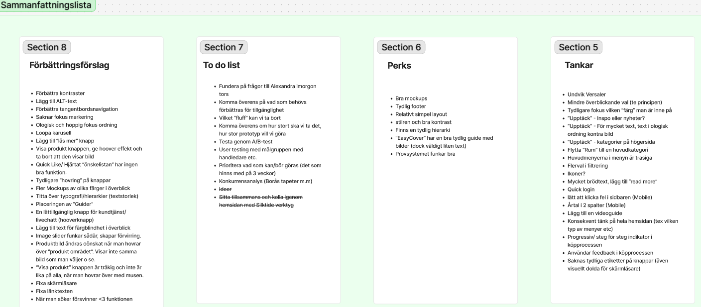
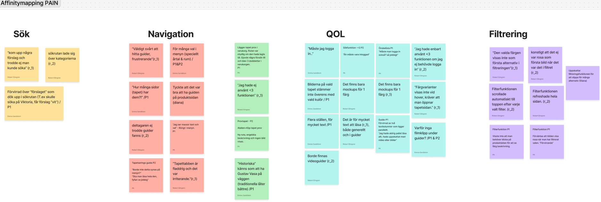
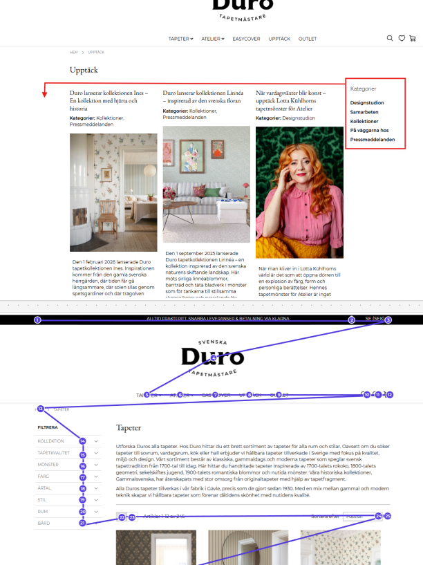
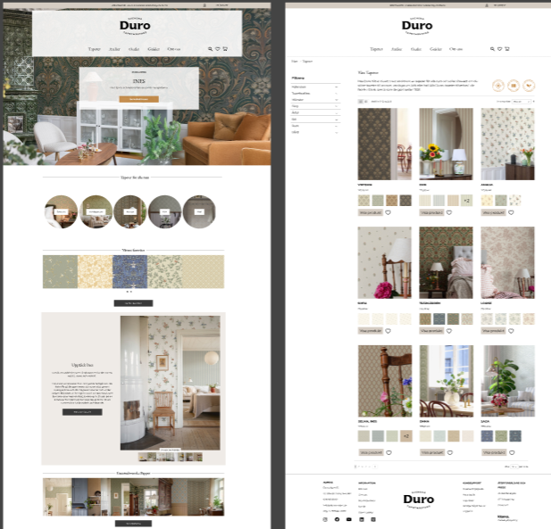
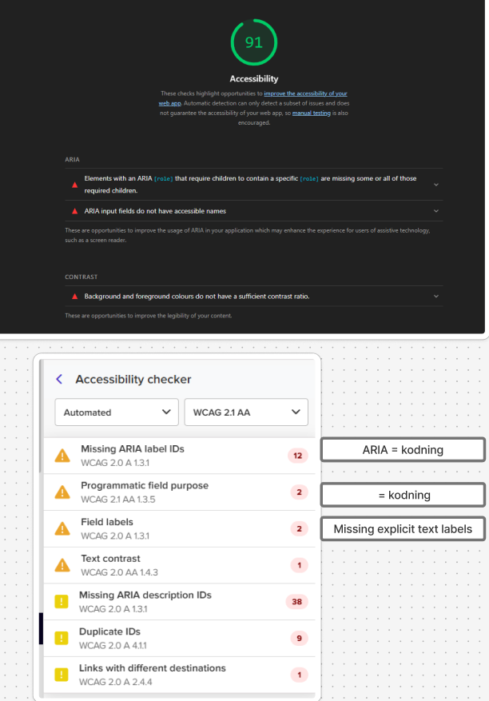
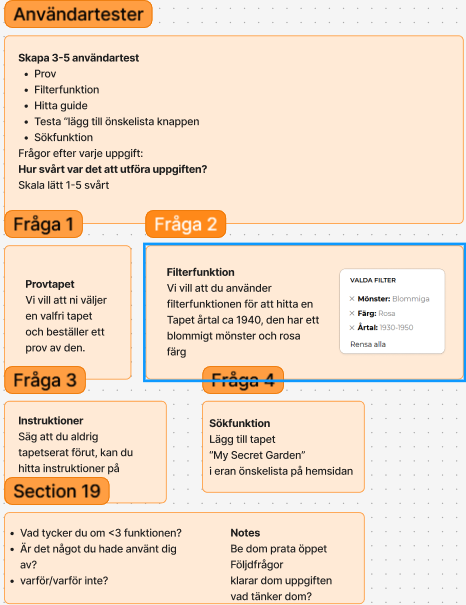
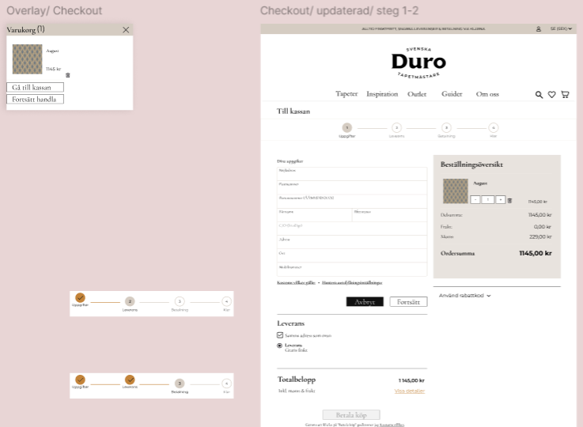

Improving accessibility, navigation and content clarity for a Swedish wallpaper brand through WCAG analysis, user testing and UX/UI design recommendations.

The website had accessibility and usability issues that affected navigation, structure and content clarity. The challenge was to identify where the experience created friction and develop design recommendations aligned with WCAG level AA.

User testing showed that important information was difficult to find and that the navigation structure needed to be simplified. Users also needed clearer visual support, better guidance and less text-heavy content.

Based on WCAG analysis and user testing, I developed design suggestions focused on clearer hierarchy, improved menu structure, stronger contrast and more accessible content presentation.

The final concept improves navigation, reduces cognitive load and supports a more accessible browsing experience. The recommendations help users find information more easily while supporting WCAG level AA requirements.
Behind the Design
The process combined WCAG analysis, user testing and UX/UI design improvements to identify accessibility barriers and create a clearer, more user-friendly experience.

Reviewing contrast, structure, navigation and content accessibility against WCAG level AA requirements.

Observing how users navigated the website to identify friction points, confusion and missing guidance.

Creating recommendations for clearer hierarchy, simpler navigation and stronger visual support.
Presenting an improved concept focused on accessibility, usability and reduced cognitive load.
WCAG improvements are not only technical requirements. They also make the experience clearer and easier for all users.
Observing real users helped identify navigation and content issues that were not obvious from analysis alone.
Better structure, stronger hierarchy and visual guidance can make information easier to understand and act on.
Reflection
Working with accessibility early in the design process showed me that inclusive design benefits every user, not only those with specific accessibility needs.
Collaborating with a real company also strengthened my ability to combine WCAG guidelines, user feedback and business requirements into practical design improvements that create a better overall experience.